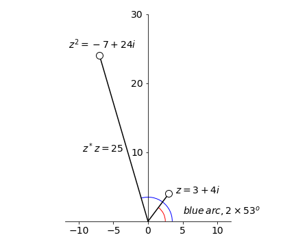

Solutions Q1 - 27
Contents
Solutions Q1 - 27#
# import all python add-ons etc that will be needed later on
%matplotlib inline
import numpy as np
import matplotlib.pyplot as plt
from sympy import *
init_printing() # allows printing of SymPy results in typeset maths format
plt.rcParams.update({'font.size': 16}) # set font size for plots
Q1 answer#
An example of two complex numbers are shown in Figure 1.
(a) their sum is \(z=1-0.5i \) and
(b) their difference is \(z=3+2.5i\).
Notice how similar the addition or subtraction of complex numbers is to adding together two vectors because the real and imaginary parts are added separately.
(c) \(-iz_1z_2 =i(2+i)(1+3i/2)=2i+3i^2 +i^2 +3i^3/2=-4+i/2\).
Q2 answer#
(a) Multiplying \(i^2\) by \(i\) produces \(i^3 = -i\) and \(i^4 = 1\) because \((-1)^2 =1\). Similarly \(i^5 = i\) and \(i^6 = i^2 =-1\).
(b) From these results, starting at \(n=0\) the integer powers of \(i\) are repeated in a series of four terms:
The \(n^\mathrm{th}\)th power of \(i\) can be represented as \(i^{(n\, mod\, 4)}\) where \(n\,mod\, 4\) returns the remainder of the integer division of \(n\) by 4 and therefore when \(n = 4\), it returns \(0\) so repeats on a cycle of \(4\). The numbers on the clock face are \(n\,mod\, 12\) so a time of \(13:00\) is the same as \(1:00\).
Q3 answer#
Using results from the previous calculation, \(i^3z=i^3(a-ib)=ai^3 -b=-b-ia\).
Q4 answer#
By multiplication \(z^2 =(3+4i)(3+4i)=9+24i+16i^2\) and this can be simplified further using \(i^2 = -1\) to give \(z^2 = -7 + 24i\).
The modulus is
and argument is \(\theta = \tan^{-1}(-24/7) = -1.287\) radians or \(-73.7^\mathrm{o}\) or \(106.3^\text{o}\) (blue arc) which is twice the angle of \(z\).

Figure 8. Squaring a complex number.
Q5 answer#
Multiplying produces \(z = 6 - 10i - 5i^2 = 11 - 10i\).
The modulus is \(\sqrt{z^*z}= \sqrt{(11+10i)(11-10i)} = \sqrt{221}\)
and the argument \(\theta = \tan^{-1}(b/a) = \tan^{-1}(-10/11) \equiv 42.27^\mathrm{o}\).
Q6 answer#
Dividing complex numbers is achieved using the complex conjugate to make the denominator a real number. By multiplying the top and bottom by the same number, effectively multiplying by \(1\), the complex conjugate of the denominator becomes
which has the form \(z = a + ib\). The modulus of this number \(|z|= \sqrt{z^*z}= \sqrt{(1+i)(1-i)}\) is 2 and the amplitude (argument) \(\theta = \tan^{-1}(1)\) which is \(45^\mathrm{o}\). This is expected because the real and imaginary parts are equal in size.
Q7 answer#
Multiplying produces \(\displaystyle z=\frac{(2-5i)(3+i)}{3-i}= \frac{11 - 13i}{3-i}\)
and to divide, the top and bottom are multiplied by the complex conjugate of the denominator which gives
The modulus is \(\displaystyle \sqrt{z^*z} =\sqrt{\frac{23^2+14^2}{25}}=\sqrt{29}\).
The argument \(\theta = \tan^{-1}(-14/23)\) or \(-31.3^\mathrm{o}\).
# example using SymPy. Notice that i becomes 1j
z = symbols('z')
z =(2-5*1j)*(3+1j)/(3-1j)
print('z = ',expand(z) )
print('modulus =', expand( sqrt(conjugate(z)*z )) )
print('argument (degrees) = ',atan( im(z)/re(z) )*180/np.pi )
z = 4.6 - 2.8*I
modulus = 5.38516480713450
argument (degrees) = -31.3286928678042
Q8 answer#
The modulus squared is \(|a+ib|^2 =z^*z=a^2 +b^2\). Therefore in
(a) \(\displaystyle |a+b|^2=\cos^2(\theta)+\sin^2(\theta) =1\) and if the argument is called \(\alpha\) then \(\displaystyle \alpha = \tan^{-1}(-b/a)= \tan^{-1}(-\tan(\theta))=-\theta\)
(b)The modulus is
and the argument \(\displaystyle \alpha = \tan^{-1}(-\tan(\theta)) = -\theta\).
Q9 answer#
Multiplying \(z^2\) and equating the result with \(w\) produces \(u + it = x^2 - y^2 + 2xyi\). Comparing the real and imaginary parts on either side of the equation it follows that \(u = x^2 - y^2\) and \(t = 2xy\).
Q10 answer#
Using equation 14, \(\displaystyle w=(-3)^{1/4}=3^{1/3}\cos\left( \frac{\theta+2k\pi}{4} \right) +3^{1/4}i\sin\left( \frac{\theta+2k\pi}{4} \right)\)
and \(k = 0,\, 1,\, 2,\, 3\). To calculate \(\theta\), equation 12 is used, and as \(-3 = 3\cos(\pi)\), therefore \(\theta = \pi\). The argument \(\theta = \tan^{-1}(3/0) = \pi\) could also have been used.
Therefore
and terms were simplified using, for example, \(\cos(\pi/4)=\sin(\pi/4)=1\sqrt(2)\).
All the roots are complex as shown below, because no value falls on the real axis, which is not surprising as they are roots of a negative number. The circle has a radius \(\sqrt{w^*w}=3^{1/4} \approx 1.3\). Plotting can be done in a similar way to that shown in the example in the text; Figure 6.
Figure 9. Argand diagrams showing left, the four roots of \((-3)^{1/4}\), question 10. Right, \(\pm\sqrt{i}\), see question Q 11.
Q11 answer#
The general equation is \(w^n =z\) with \(n=2\) and \(z=i\) in this question. Using equation 14, the roots \(w\) are
with \(n = 2,\, R = 1\) and \(m = 0,\, 1\) because there are two roots. Using equation 12 to make this equal to \(z = i\), it follows that \(i = \cos(\pi/2) + i \sin(\pi/2)\) because \(\cos(\pi/2) = 0\) and \(\sin(\pi/2) = 1\).
The square roots of \(i\) are therefore
which can be written as \(\displaystyle w=\cos(k\pi/4)+i\sin(k\pi/4)\)
with \(k=1,5\)
The modulus is \(\sqrt{w^*w}=\sqrt{(1-i)(1+i)/2}=1\). See figure 9.
Q12 answer#
The general equation is \(w^n =z\) with \(n=4\) and \(z=16\). Using equation 14,
and from equation 12, \(16 = 16(\cos(0) + i \sin(0))\) therefore \(\theta = 0\). The roots are found with \(k=0,1,2,3\)
are
Q13 answer#
The modulus of a complex number \(z=a+ib\), is \(a^2 +b^2\) which in this case is \(\sqrt{2+9}= \sqrt{13}\) and argument \(\theta = \tan^{-1}(b/a)\) which is \(\theta = \tan^{-1}(3/2)\).
The equation to solve is \(w^2 = 2 + 3i\) which has the general form \(w^n =z\). Writing
then using equation 14 leads to a solution
where \(k=0,1\) therefore the roots are
which have values \(w=1.67+0.896i\) and \(w=-1.67-0.896i\). The roots lie on a circle of radius \(13^{1/4} = 1.898\) at angles of \(\tan^{-1}(0.896/1.67)\) or \(28.15^\mathrm{o}\) and \(180 + 28.15^\mathrm{o}\).
Q14 answer#
As \(e^{i\theta}=\cos(\theta)+i\sin(\theta)\) andb from the question the angle \(\theta = 1\), therefore \(e^i = \cos(1) + i \sin(1) = 0.540 + 0.841i\). Remember that the number \(1\) is in radians where \(\pi\) radians = \(180^\mathrm{o}\).
Q15 answer#
(a) Using Euler’s equation, \(ie^{ix} = i\cos(x) - \sin(x)\) and the real part is \(-\sin(x)\) and the imaginary \(\cos(x)\).
(b) \(n\) can take any integer value, positive, negative, and zero. If \(n\) is positive, then
because the sine is zero at integer multiples of \(\pi\). It is now necessary to distinguish between odd and even \(n\). For odd \(n\), \(e^{ni\pi} =-1\), and for even \(n\) and \(n=0\), \(e^{ni\pi} =1\). For negative \(n\), \(e^{-ni\pi} = \cos(n\pi) - i \sin(n\pi)\) because \(\sin(-x) = -\sin(x)\) but the cosine is an even function so that the cosine is the same for both positive and negative \(n\).
(c) \(e^{\pm ni\pi/2} = \cos(n\pi/2) + i \sin(n\pi/2)\). The result now depends on the value of \(n\) with a period of \(4\), because the sine and cosine are variously \(0,\, 1\), or \(-1\) for integer multiples of \(\pi\) and \(\pi/2\).
Q16 answer#
(a) Raising to powers of \(e\) gives \(i^i = e^{i\ln(i)}\) and using the result \(\ln(i)=i\pi/2\) (see example 3 in section 8) then \(i^i=e^{-\pi/2} \approx 0.2079\). It is somewhat surprising that this is a real number.
(b) Similarly, \(i^{1/i} = e^{\ln(i)/i}\) and therefore, from part (a), \(i^{1/i} = e^{\pi/2}\). Alternatively \(i^{1/i}\) can be written as \(i^{1/i} = i^{-i}\) because \(i = -1/i\) and so it is the reciprocal of the answer in part (a).
Q17 answer#
To solve \(\displaystyle x=\frac{e^{iy}+e^{-iy}}{2}\), multiply both sides by \(2e^{iy}\) to obtain
that can be solved as a quadratic in \(e^{iy}\). The solutions are
and \(y\) is found by taking logs which gives \(iy= \log\left( x\pm \sqrt{x^2-1} \right)\).
As \(\cos(y)=x\) then \(\cos^{-1}(x)=-i\ln(x\pm\sqrt{x^2-1})\) where the negative sign before the square root is taken if \(|x|\gt 1\).
Q18 answer#
Expanding the left-hand side and using \(\cos^2(x) + \sin^2(x) = 1\) gives \(2 \cos(x)\sin(x) = \sin(2x)\). Looking up the trig conversions to exponential form and expanding gives
Using the definition of the sine, \(\displaystyle \sin(2x) =\frac{e^{2x}-e^{-2x}}{2i}\) proves the identity.
Q19 answer#
Expanding the function as in the previous question gives
Q20 answer#
The theorem is
so that \(\displaystyle e^{i(a+b)}=\cos(a+b)+i\sin(a+b)\), Expanding the exponential gives
Comparing the real parts in the two equations above gives \(\cos(a + b) = \cos(a)\cos(b) - \sin(a)\sin(b)\) and imaginary parts \(\sin(a + b) = \sin(a)\cos(b) + \cos(a)\sin(b)\).
Q21 answer#
Using Euler’s formula, convert the equation to the exponential form using
Subtracting the two equations from one another gives \(\displaystyle \sin(\theta)=\frac{e^{i\theta}-e^{-i\theta}}{2i}\).
It is difficult to know where to start with \(|\sin(i\theta)|\), but when in doubt use the exponential form. The square of the absolute value of a complex number \(z\) is \(|z|^2 =z^*z\),therefore,
which, when the square root is taken, is \(\displaystyle |\sin(i\theta)|=\left| \frac{e^\theta-e^{-\theta}}{2} \right|=|\sinh(\theta)|\). The absolute value of the sine has always to be a positive number therefore the absolute value of the sinh has to be taken also. The complex sine (hyperbolic sine) function is therefore not bounded by 0 to 1 as are the real sine functions. The plot below shows this clearly
Figure 10. Plot of \(|\sin(ix)|\) and \(|\sin(x)|\) .The sine function repeats in the range \(0 \to 1\); the complex sine is the function \(\sinh(x)\) and tends to infinity at large \(| x |\).
Q22 answer#
(a) You may need to consult the chapters on differentiation or integration if you are not familiar with these. Differentiating produces \(\displaystyle \frac{dz}{dx}=-\sin(x)+i\cos(x)\) and substituting for \(z\) produces \(\displaystyle \frac{dz}{dx}=iz\).
(b) Integrating \(\displaystyle \int\frac{dz}{z}=i\int dx\) gives \(\ln(z)=ix+c\). To evaluate the constant \(c\), suppose that \(x = 0\), therefore, \(\ln(z)=c\). However, when \(x=0,\,z=1\) and because \(\ln(1)=0\), therefore \(c = 0\). Rearranging \(\ln(z) = ix\) gives \(z = e^{ix}\) or \(e^{ix} = \cos(x) + i \sin(x)\) which is Euler’s Theorem.
Q23 answer#
Multiply top and bottom by \(-i\omega\) to eliminate the complex number on the denominator, then use Euler’s equation to replace the exponential.
Q24 answer#
(a) If there were only one term in the sum then
therefore for two spins
The real part of the signal is the two cosine terms, \(e^{-t/\tau}(a_1 \cos(\omega_1 t) + a_2 \cos(\omega_2 t))\) which will beat against each other giving a modulated signal. This will decay away because of the exponential. The imaginary part is the sine terms. The absolute value squared is
This signal has an exponential decay with a superimposed cosine term at the difference of the two frequencies.
(b) Plotting the signal gives
t = np.linspace(0,1000,1000) # define time range
s = lambda t, tau: np.exp(-2*t/tau)*(a1*np.cos(w1*t)+a2*np.cos(w2*t))
w1= 1/(2*np.pi)
w2= 0.2/(2*np.pi)
a1= 2
a2= 2
tau= 50
plt.plot(t,s(t,tau),color='red',linewidth=3)
tau= 500
plt.plot(t,s(t,tau),color='blue')
plt.show()
Figure 11. Signals with \(\tau=50\) (boldline) and \(\tau =500\).Notice the double modulation when the decay time is longer that the longest period. In the shorter decay, this is so rapid that the longer period wave is damped out. The two grey curves are the two frequencies making up the signal.
(c) If the initial amplitude \(a_1 = i\) and the other \(a_2 = 1\), then the real part of the signal is minus the sine of the first term, because \(i^2 = -1\) giving
and the real part is \(e^{-t/\tau}(\cos(\omega_2t) - \sin(\omega_1t))\). The imaginary part is the sine minus the\cosine terms.
Q25 answer#
(a) By examining the initial equation, because \(\sin^2(\theta)\) is present the result has no imaginary number in it (\(i^2 = -1\)), therefore the result cannot contain a sine. Substituting, expanding and collecting terms gives
(b) A similar substitution generates the result for the other identity.
Q26 answer#
The series are \(C = \cos(x) + \cos(2x)/2! + \cos(3x)/3! + \cdots \) and \(S = \sin(x) + \sin(2x)/2! + \sin(3x)/3! + \cdots\) then
To obtain the last result, the exponential series has been identified. Converting back to the trig form produces
from which equating the real part of both sides of the equation gives \(C = e^{\cos(x)} \cos(\sin(x)) - 1\). When plotted this function produces a regular series of spikes.
Q27 answer#
Multiplying by the complex conjugate gives
Using Python to plot the graph, first define functions \(\mathtt{z1}\) and \(\mathtt{z2}\) (see code below) and vary the frequency. You will need to guess this but \(0 \to 10^4\) Hz works well.
The high frequency can be determined by making \(\omega = 0\), then infinity, or by plotting the graph only to, say, a frequency of 500 Hz and seeing where this ends on the plot. When \(\omega = 0\) only the real part of the plot exists, so this has to be on the abscissa. When \(\omega = \infty\), both z1 and z11 are zero so the high frequency should be at the origin.
Figure 12. Impedance plot, \(\omega =0\to 10^4\) Hz,\(R=5\mathrm{k\Omega}\; C=1\mathrm{\mu F}\).
# code to plot fig 12
w = np.linspace(0,6000,1000)
z1 = lambda R,C,w: R/(1 + (R*C*w)**2)
z2 = lambda R,C,w: R**2*C*w/(1 + (R*C*w)**2)
R = 5000
C = 1e-6
#plt.plot(z1(R,C,w),z2(R,C,w),color='red') # fig 12
#plt.show()
Q28 answer#
One atom is at \((0,0,0)\) and the body centred one at \((u,v,w)=(1/2,1/2,1/2)\) as fractions of the cell axis lengths. Let \(f_A,f_B\) be the atomic scattering factors then from eqn. 21 the scattering factor is,
and the intensity is \(F^*F\),
(a) When the atoms are different, \(F\) is positive for all \(h,k,l\). Physically the intensity can never be negative and is shown mathematically because \(f_A^2+f_B^2 \gt 2f_Af_B\) but the intensity will be smallest when the cosine is equal to \(-1\), i.e. when \(h+k+l\) is an odd integer.
(b) When \(f_A=f_B=f\),
which means that the intensity is zero when \(h+k+l \) is an odd integer and is typical for a body centred lattice.
Q29 Answer#
The scattering factor is a complex number and converted to cosine / sine form is
which can be put into the form
where \(A\) is the summed cosine and \(B\) the summed sine. The intensity of the scattered diffraction is \(F^*F\) or
When the change \(h,k,l\to -h,-k,-l\) is made the structure factor becomes,
and as \(\cos(-x) = \cos(x)\) and \(\sin(-x)=-\sin(x)\) becomes
and so the intensity becomes
The identical result for \((h,k,l)\) and \((-h,-k,-l)\) known as Friedel’s law. Thus the diffraction image is centro-symmetric, even if the crystal is not. This is a manifestation of the phase problem in solving structures from x-ray diffraction experiments. The fact that intensity is measured and not the amplitude introduces ambiguity.